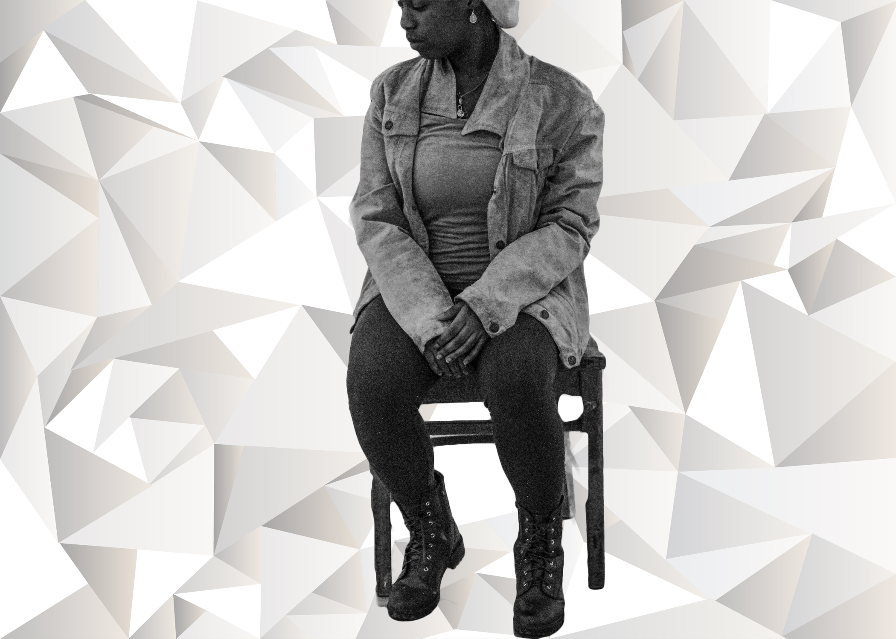
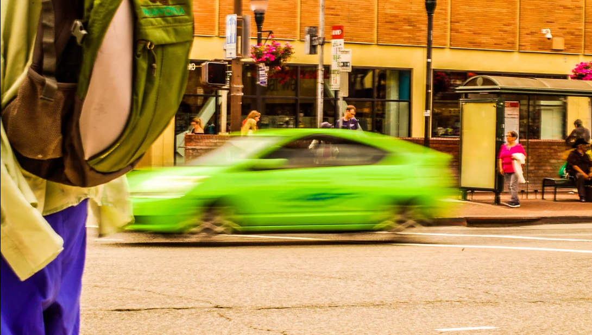

My Portfolio

Stick Falls
A black and white filter was put on this photograph.

Boxed
A black and white filter was used on the photo. Photoshop was used to insert the background.

Little Red Riding Hood
Photoshop was used to insert two backgrounds to the photo.

Green Flash
Lightroom was used to make the colors more saturated
Self Portrait #1
Lightroom was used to make the colors more visible

Light out of the dark
Lightroom was used to make the background darker
×